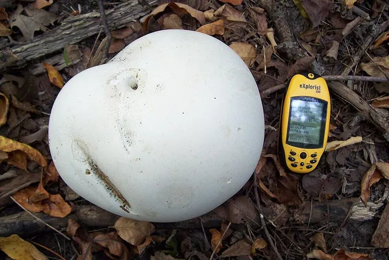

Main course · Popular in Midwest
Puffball parmesan
Puffball parmesan is made with wild giant puffball, a favourite in Midwest.

How do you make puffball parmesan?
Breaded puffball slices baked with tomato and cheese.
Wild ingredients
- Giant puffball (Calvatia gigantea): in season August to October
Watch the recipe

Video: Donald Porta on YouTube